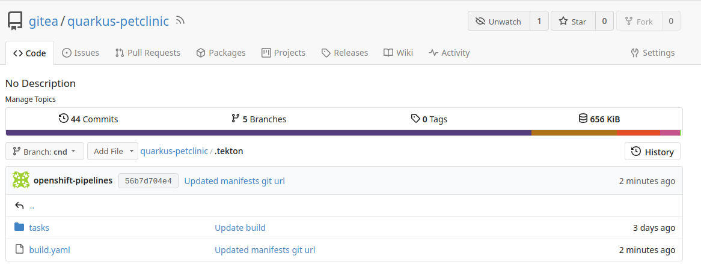
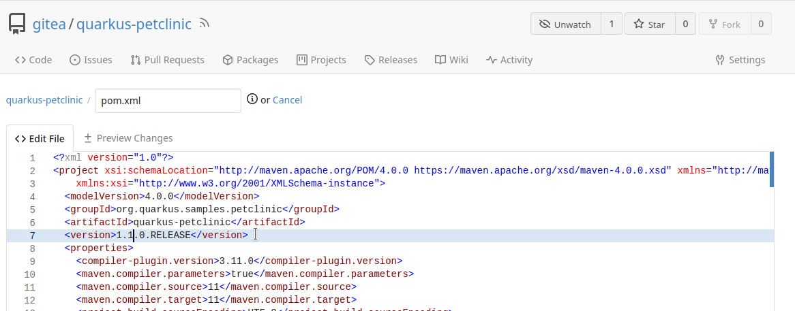
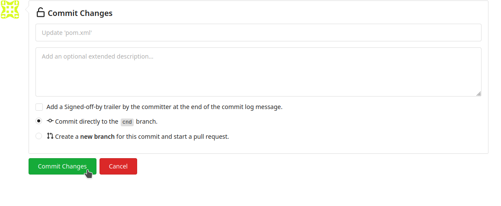
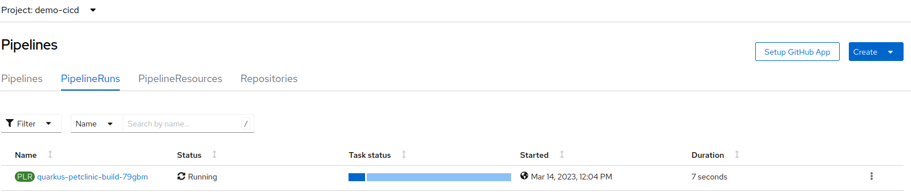
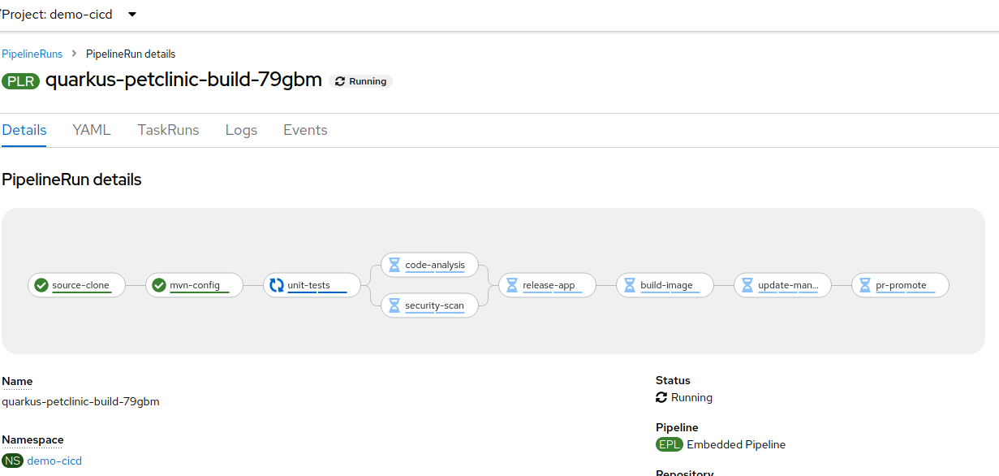
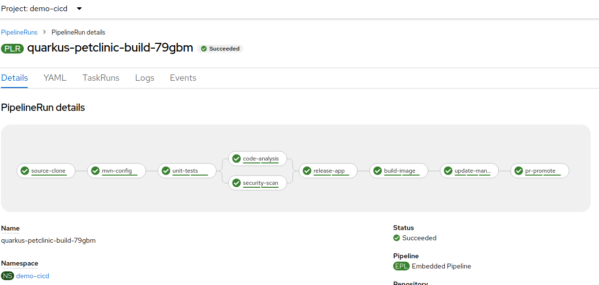
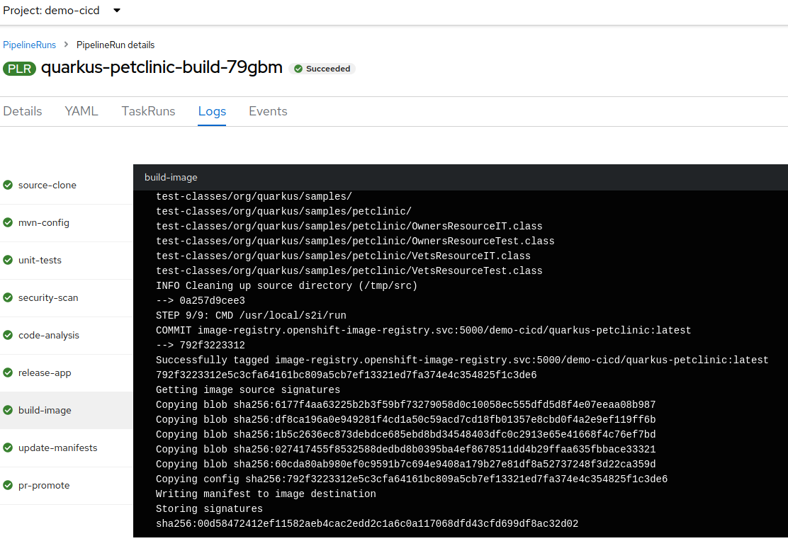

Red Hat OpenShift Pipelines
In this section, we will explore how to implement Continuous Integration (CI) with OpenShift Pipelines, which leverages Tekton underneath. Pipeline runs are defined as code, allowing for greater flexibility and easier management.
In our setup, pipelines are defined as code within the .tekton directory of our application repository in Git. The repository is configured with a webhook for commits, which triggers a request to the Pipelines as Code Controller to execute the pipeline.
Navigate to the quarkus-petclinic repository and inspect the .tekton directory files.

Try to understand the yaml files. Useful references:
These pipeline runs are responsible for:
-
Cloning the Git repository.
-
Configuring Maven.
-
Running unit tests.
-
Performing Sonar analysis.
-
Uploading the application release to Nexus.
-
Building the container image using source-to-image (s2i).
-
Pushing it to the internal OpenShift registry.
-
Updating manifests for Argo CD detection.
-
Opening a pull request in the repository for verification before deploying to stage.
OpenShift Pipelines and Tekton provide a transparent, repeatable, and automated CI/CD process by defining pipeline runs as code.
Steps to see it in action:
-
Make a change in the source code to trigger the pipeline.
-
Open
pom.xmland increment the version of the release.

-
Commit the changes to the repository.

-
In the OpenShift web console, navigate to the
demo-cicdworkspace, Pipelines → PipelineRuns. The pipeline will appear running.


-
Click on the running pipeline to view its stages and logs. Wait for it to complete.

-
Click on the
build-imagestage to review logs. Take note of thesha256assigned to the image, e.g.,00d58….

At this point, the CI cycle has been successfully executed using Tekton. The pipeline has automated all steps, including building the application image, and has created a commit in the configuration repository. The next section will cover CD.